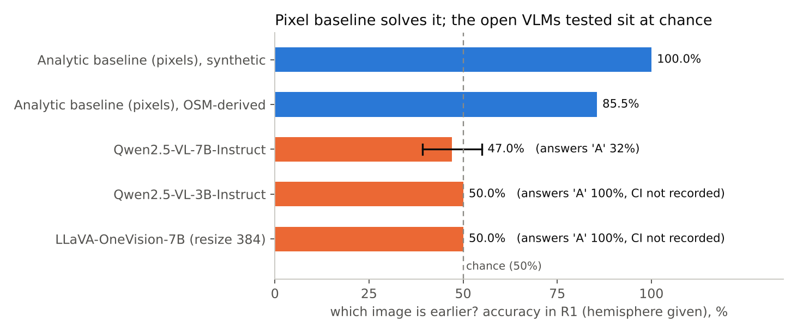
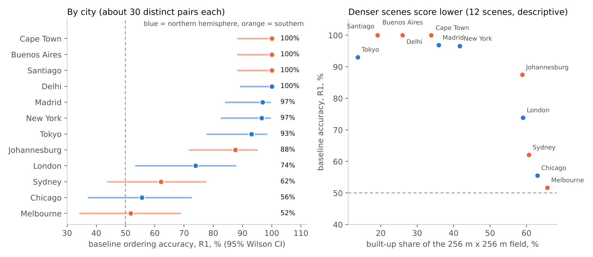

shadowclock
Can a vision-language model read the time of day from overhead shadows? A controlled benchmark with exact ground truth, twelve OSM-derived city scenes you can watch under a moving sun, and a negative result reported as it is.
What the benchmark asks
Two north-up, straight-down renders of the same place and date at different times. Which one is earlier, and by how many hours? Information is released in steps: images only (R0), plus the hemisphere (R1), plus latitude, longitude and date (R2). Sun positions come from the NOAA ephemeris, validated against pvlib. A baseline that measures shadow direction from the pixels solves the synthetic task, so the information is in the image.

Where the pixel baseline struggles
On the OSM-derived scenes accuracy depends strongly on the city: 100% in Delhi, Santiago, Buenos Aires and Cape Town, but 56% in Chicago and 52% in Melbourne, where dense blocks make shadows merge and fall on neighbouring roofs. About 30 distinct pairs per city, so the intervals are wide. Click a city on the map.

Play the model
The viewer includes the benchmark question for people: two renders, pick the earlier one, with the same sampling rules as the dataset and constant brightness so brightness is not a clue. Answers stay in your browser and export as CSV. A few dozen answers from a few people is a usability check, not a human benchmark.
Honest limits
- The "real" scenes are OSM footprints extruded and rendered: simulated imagery, not aerial photographs. About half of building heights are assumed defaults.
- Only three small open models were tested, and two of them answer "A" almost always, so they say little about shadow reading. This is a negative result on weak models, not a statement about frontier models.
- 698 pairs (349 distinct plus their swapped twins) reuse 265 images from 12 scenes; they are not 698 independent tests.
- Close predecessors exist (shadow-based acquisition-time inference on real aerial images, and VLM time-of-day benchmarks on street photos). This project is a controlled overhead diagnostic, not a claim of first.